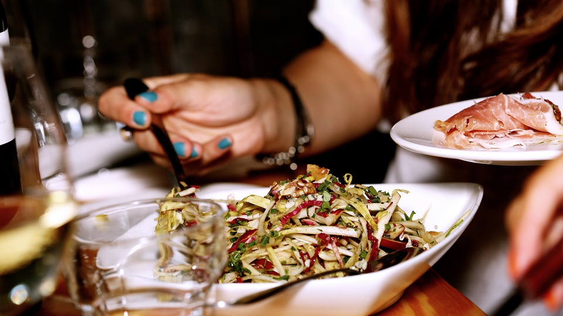

|  | ||
Studio MuNo Poço da Panela sob o comando do chef Matheus Scuchoa, tem as mais variadas opções de alimentação. Sendo café, bar e bistrô, o Studi Mu nos prova que pode ser feita sim várias ofertas de cardápio com sucesso. Ofertando sua própria marca de chocolates, tem a proposta de ofertar alimentos não convencionais, com pratos com apresentação florais o chefe ama explorar o conceito de PANCS (plantas alimentícias não convencionais), em meio a obra de artes, podemos navegar por uma proposta da fuga do sólido. |
||
| Desenvolvido por Milena Melo - 2023 | ||